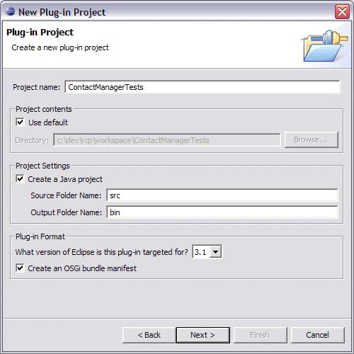
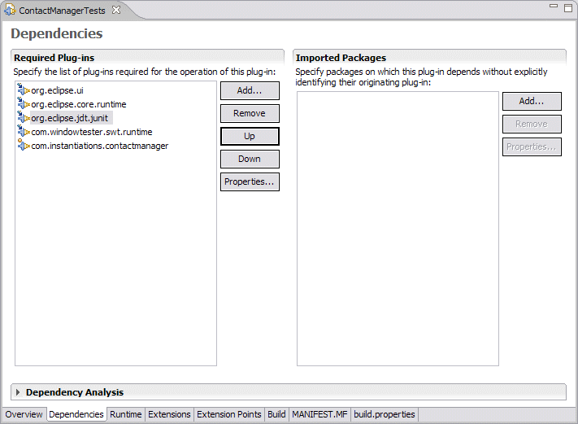
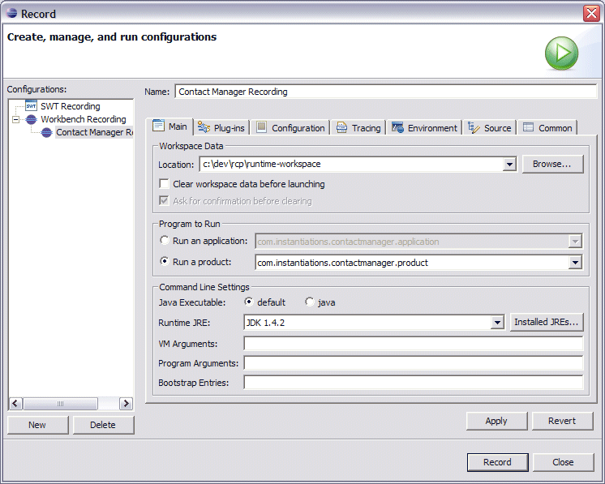
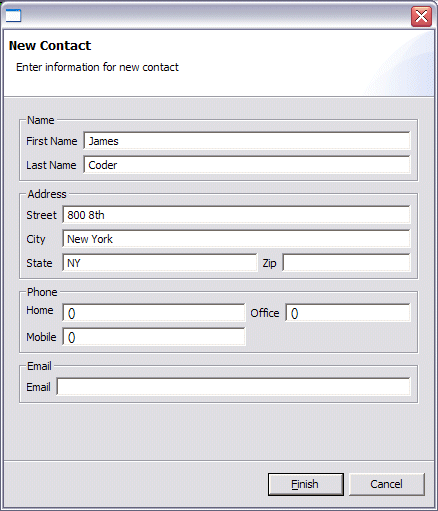

Using the Window Tester
The Window Tester, a part of the RCP Developer, is used to record and playback a GUI test on the RCP Contact Manager Application. The first step is to generate a plug-in project for the test cases. From the File > New > Project menu, select Plug-in Project.

Enter “ContactManagerTests” as the project name and click the Next button.

The default values on the following page are fine.

There’s no need to continue with the remaining wizard pages. Click the Finish button to create the ContactManagerTests plug-in project.

As shown in the Dependencies editor above, add the following dependencies to the plug-in project:
- com.windowtester.swt.runtime
- org.eclipse.jdt.junit
- com.instantiations.contactmanager
Be sure to save your changes.
The next step is to set up a recording configuration. Look for a tool item that looks like the run arrow with a little console under it (should be next to external tools); from its pull-down menu select "Record..."

Select Workbench Recording and click on the New to create a new configuration.

Enter “Contact Manager Recording” in the name field. Select the “Run a product” radio button and choose com.instantiations.contactmanager.product. Now click on the Record button.
The Contact Manager application is launched and is ready for recording. A recorder controller dialog appears in the development environment, and is as shown below. Click on the record button (the green arrow) to start recording.

In the Contact Manager application, select File > New Contact.

Enter the first name, last name and address for the new contact. Then click on the Finish button. Now double-click on the new contact to open it in the editor. To stop the recording simply exit from the application by choosing the File > Exit menu option.
A New UI Test wizard will open.

Specify the source folder for the test project – ContactManagerTests/src , a package name – contactManagerTests and a test name – NewEntryTest. Click on the Finish button to generate this test.
Note: WindowTester uses sockets to communicate between the recorder and the development workbench. If you have a local firewall installed you might need to explicitly allow the socket connections.
If you open a java editor on the generated test case, the code should look something like this
public class MyTest extends UITestCase {
public void testMain() throws Exception {
IUIContext ui = getUIContext();
ui.click("viewform");
ui.doubleClick("Little,Sam.tableitem");
ui.click("text");
ui.enterText("27 Lolly Lane");
ui.setFocus("text1");
ui.enterText("Where?");
ui.click("*Little,Sam.ctabitem", 93, 11);
ui.waitForShellShowing("Save Resource");
ui.click("&Yes.button");
ui.waitForShellShowing("Save");
ui.click("OK.button");
ui.click("&File.menuitem", "New Contact...");
ui.waitForShellShowing("");
ui.setFocus("text2");
ui.waitForShellShowing("");
ui.enterText("Doctor");
ui.setFocus("text3");
ui.enterText("Who");
ui.setFocus("text");
ui.enterText("Gaggle");
ui.setFocus("text1");
ui.enterText("Unknown");
ui.click("Finish.button");
ui.click("viewform");
ui.click("&File.menuitem", "E&xit");
}
To playback the test, first create a new JUnitPlugin test launch configuration from the Run > Run... menu, selecting the JUnit Plugin Test configuration. Click New to create a new configuration.

Select the “Run a single test” radio button and choose the previously generated test named NewEntryTest in the ContactManagerTests project. Now switch to the “Main” tab.

Specify the com.instantiations.contactmanager.product as the product to run. Click on the Run button. The recorded test is played back.
Now, if you would like to slow down the playback, go to the Window > Preferences dialog. Select the Window Tester Playback page. Check the Delay and the Highlighting boxes and click the Apply Button. The playback will go a lot slower.